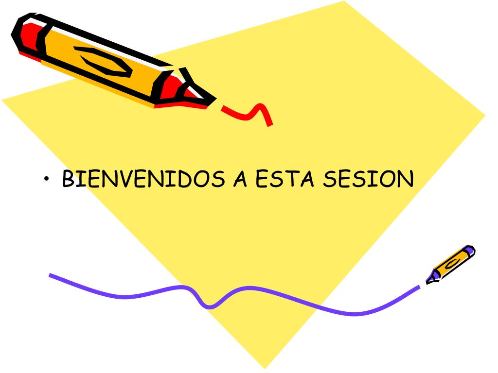

Ciudad De Guatemala
Tradicion
Las procesiones son el punto central de la Semana Santa en Guatemala, donde cada ciudad y pueblo celebra desfiles religiosos que conmemoran la Pasión y Muerte de Jesucristo. Estos eventos están repletos de simbolismo y acompañados por imágenes religiosas, músicos y devotos que adornan las calles con alfombras de aserrín coloreado. Los cucuruchos, devotos con túnicas encapuchadas, y los cargadores, que llevan las imágenes religiosas, juegan roles fundamentales en estas procesiones. Además de las procesiones, la Semana Santa incluye ritos y tradiciones religiosas como la Última Cena y actividades culturales como la música sacra y representaciones teatrales. Este período representa una profunda reflexión espiritual y comunitaria, así como un momento para enorgullecerse de las tradiciones y la identidad cultural guatemalteca.
Procesiones
Las procesiones de Semana Santa en Guatemala han inundado las calles del país con fervor religioso y arraigada tradición cultural. Desde majestuosas andas cargadas con imágenes sagradas hasta las coloridas túnicas de los cucuruchos, estas procesiones ofrecen un espectáculo cautivador que ha congregado a multitudes en las ciudades y pueblos, especialmente en Antigua Guatemala, reconocida por sus impresionantes desfiles. Cada paso está meticulosamente coreografiado, con devotos moviéndose en sincronía para llevar las andas a través de las intrincadas alfombras de aserrín. Para muchos, estas procesiones son una expresión profunda de fe y una oportunidad para conectarse con la comunidad y las tradiciones ancestrales. A medida que las procesiones continúan su recorrido, cada una ofrece una experiencia única, desde las elaboradas en las ciudades hasta las íntimas en los pueblos rurales, reflejando la diversidad y riqueza de la tradición guatemalteca. En cada paso y oración, las procesiones de Semana Santa siguen siendo una impresionante manifestación de devoción que une a todo un pueblo en un espíritu de unidad y esperanza.
Celebraciones
La Semana Santa en Guatemala ha comenzado, sumergiendo al país en una celebración única que mezcla fervor religioso, tradiciones arraigadas y una rica herencia cultural. Desde las procesiones majestuosas hasta las coloridas alfombras de aserrín, este evento une a toda la nación en un espíritu de devoción y celebración. En Antigua Guatemala, el epicentro de estas festividades, las calles adoquinadas se llenan de vida con una explosión de colores y sonidos, adornadas con alfombras meticulosamente diseñadas que expresan la fe y devoción de los residentes locales. Pero la celebración va más allá, con familias reunidas para banquetes tradicionales y música sacra que llena las calles. Las representaciones teatrales de la Pasión de Cristo también son populares, ofreciendo a los espectadores una visión dramática de los eventos religiosos. Para los guatemaltecos, la Semana Santa es un momento especial para reflexionar sobre la fe y tradiciones, y celebrar la identidad como guatemaltecos. A medida que la semana llega a su clímax con las celebraciones del Jueves Santo y el Viernes Santo, los guatemaltecos continúan mostrando su compromiso con la fe y amor por estas tradiciones tan queridas y significativas. Esta noticia resalta cómo la Semana Santa une a la población en un espíritu de fe y comunidad, mostrando su importancia como celebración religiosa, cultural y tradicional en Guatemala.
Galería
Aquí puedes encontrar algunas imágenes de las procesiones y celebraciones de la Semana Santa en Guatemala...
